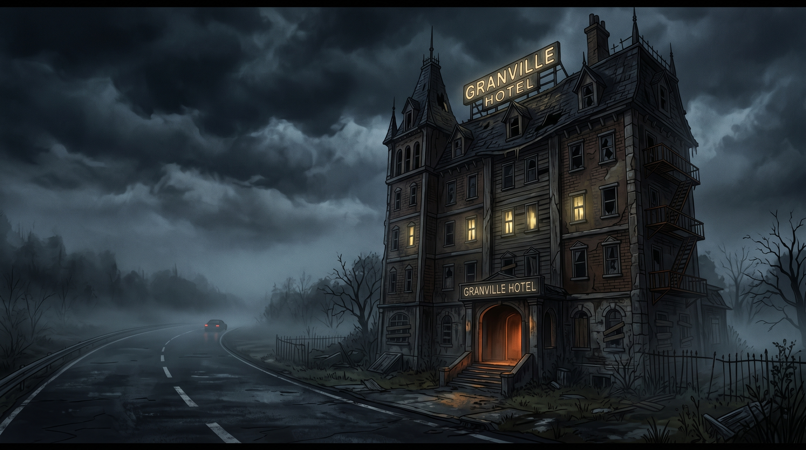
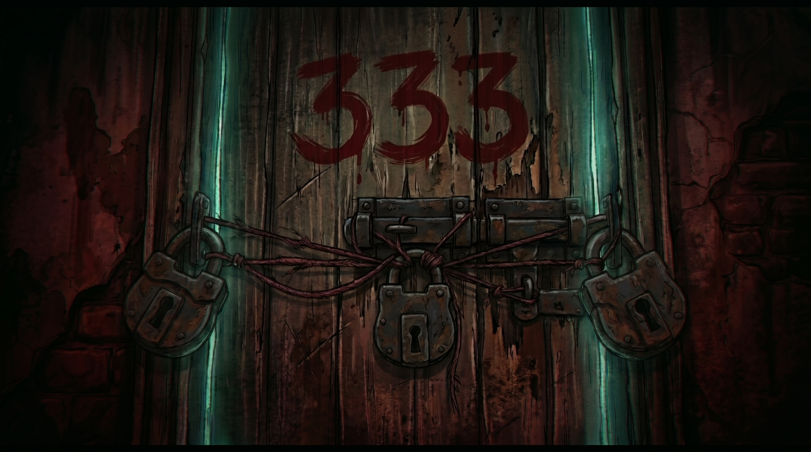
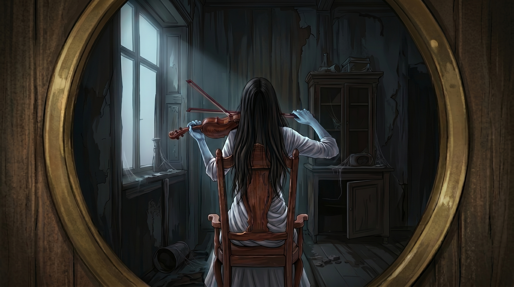

Radhika apni nayi business deal ke liye Lucknow se Kolkata ja rahi thi. Raat kaafi ho chuki thi aur woh bahut thak bhi gayi thi.
Usne apne driver Kotwaal se kaha, “Pass mein jo bhi hotel dikhe, wahan gaadi rok lena.”
“Ji memsahib,” Kotwaal ne jawab diya.
Kuch hi der baad, Kotwaal ne highway ke paas ek puraane hotel ke saamne gaadi rok di.
Radhika ne car ka sheesha neeche kiya aur hotel ko dekha.

Hotel highway ke beechon-beech ek sunsaan jagah par bana hua tha. Door-door tak insaan ka koi naam-o-nishaan nahi tha. Na koi ghar, na koi dukaan aur na hi aas-paas kisi insaan ki aahat.
Radhika bahut thak chuki thi. Zyada soche bina usne Kotwaal se gaadi se saamaan nikaalne ko kaha.
Ek haath mein trolley aur doosre mein purse lekar Radhika hotel ke andar chali gayi.
Reception par pahunchte hi usne chaar din ke liye room book kiya aur jaldi se check-in kiya.
Manager ne use Room Number 336 ki chaabi di aur kaha, “Madam, ek request hai. Aap apne theek saamne wale Room Number 333 se door rahiyega. Have a good night!”
Manager ki baat Radhika ko thodi ajeeb lagi. Lekin woh itni thaki hui thi ki usne zyada dhyaan nahi diya.
Usne bas haan mein sir hilaaya aur lift se upar chali gayi. Room ke paas pahunchkar usne lock khola, andar gayi aur jaate hi so gayi. Udhar, driver Kotwaal bhi bahar car mein hi so gaya.
Pehli Jhalak
Agli subah kareeb 8 baje Radhika meeting ke liye ready hui aur apne room se bahar nikli.
Room lock karte waqt use achanak manager ki woh baat yaad aa gayi—apne saamne wale room se door rehna. Lekin woh meeting ke liye pehle hi late ho chuki thi, isliye usne zyada dhyaan nahi diya.
Meeting ke baad Radhika corridor se apne room ki taraf laut rahi thi aur dheere-dheere ek gaana gunguna rahi thi. Apne room ke paas pahunchte hi uski nazar saamne wale Room Number 333 par padi.
Is baar Radhika us room ke paas chali gayi. Usne dekha ki room ka darwaaza bahut puraana tha. Darwaaze par teen bade-bade taale lage hue the. Aur un teeno taalon ko mote laal dhaagon se kas kar baandha gaya tha.
Yeh sab dekhkar Radhika ke andar curiosity jaag uthi. Woh gaur se darwaaze ko dekhne lagi. Aakhir us room ke andar aisa kya tha, jiski wajah se manager ne use usse door rehne ke liye kaha tha?
Tabhi uski nazar keyhole par padi. Radhika dheere se jhuki aur apni ek aankh keyhole se laga di.
Andar ek aurat chair par baithi hui thi. Uske baal khule hue the aur usne safed saari pehni hui thi. Lekin Radhika uska chehra nahi dekh paa rahi thi, kyunki woh aurat darwaaze ki taraf peeth karke baithi thi.
Radhika ko yeh sab bahut ajeeb laga. Woh kuch aur soch paati, usse pehle use yaad aaya ki agle din uski ek aur early meeting thi. Woh mud gayi aur apne room mein chali gayi.
Raat Ke 3:13
Agle din meeting se lautne ke baad Radhika seedha apne room mein gayi aur so gayi. Use bilkul yaad nahi tha ki usne Room Number 333 ke andar kuch dekha bhi tha.
Phir achanak raat kareeb 3:13 baje, ek gaane ki awaaz se Radhika ki aankh khul gayi. Usne dhyaan se suna. Kisi ladki ki awaaz mein koi dheere-dheere gaana gunguna raha tha. Aur background mein violin bhi baj raha tha.

“Raat ke is waqt kaun gaana gaa raha hai?” Radhika ne socha aur bed se uth gayi.
Jaise hi woh room se bahar nikli, use mehsoos hua ki gaane ki awaaz Room Number 333 se aa rahi thi. Radhika dheere-dheere us room ke paas gayi aur keyhole se andar jhaanka.
Ek baar phir wahi aurat chair par baithi hui thi. Uski peeth darwaaze ki taraf thi. Lekin is baar woh aurat violin baja rahi thi aur saath mein gaana gunguna rahi thi.
Radhika ko yeh sab behad daraavna aur ajeeb laga. Usne socha ki subah hotel manager se is baare mein zaroor baat karegi. Phir woh apne room mein wapas chali gayi.
Sab Kuch Laal Tha
Agli subah hotel mein Radhika ka aakhri din tha. Usne apna saara saamaan pack kiya aur jaise hi room se bahar nikli, use pichhli raat ki baat yaad aa gayi. Usne ek baar phir Room Number 333 ke keyhole se andar jhaanka.

Lekin is baar usne jo dekha, woh uski samajh se pare tha. Room ke andar kuch bhi dikhai nahi de raha tha. Har jagah sirf laal hi laal nazar aa raha tha.
Radhika gusse aur confusion mein seedha reception par manager ke paas pahunchi.
“Room Number 333 ke andar aakhir hai kya? Aapne mujhe uske paas jaane se mana kiya tha, lekin ek din maine keyhole se dekha toh andar ek aurat thi. Kal raat woh gaana gaa rahi thi aur violin baja rahi thi... aur aaj andar kuch bhi dikhai nahi de raha. Sab kuch laal dikh raha hai. Aakhir us room mein kya hai? Aur woh aurat kaun hai? Aaj sab kuch laal kyun hai? Yeh kya ho raha hai?”
Manager ne Radhika ki taraf dekha. Uske chehre par darr saaf nazar aa raha tha. Phir usne ek dari hui aur gambheer awaaz mein kaha, “Aap bilkul sahi keh rahi hain, madam. Us room mein ek chudail ka saaya hai.”
Radhika chup reh gayi.
Manager ne aage kaha, “Aur aaj jab aap keyhole se usse dekh rahi thi... toh woh bhi andar se apni laal aankhon se aapko dekh rahi thi.”
Yeh sunte hi Radhika ke pairon tale zameen khisak gayi. Woh zor se zameen par gir padi. Kotwaal daudta hua uske paas aaya. Lekin Radhika ka shareer thanda pad chuka tha. Woh mar chuki thi.
Manager reception ke peeche khada use dekhta raha. Phir usne dheere se apna register khola. Uske chehre par ek halki si muskaan aayi... aur usne register mein se ek aur naam kaat diya.
← Back to Hinglish Tales